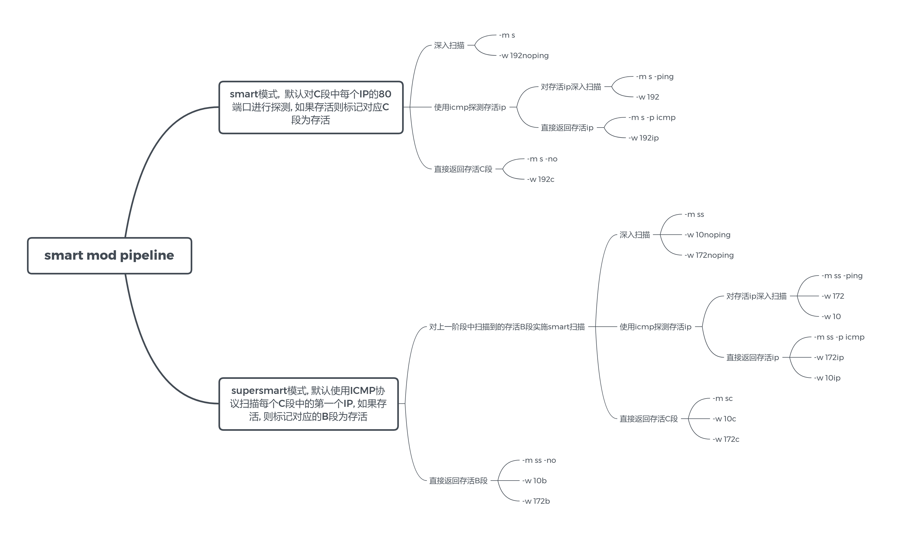

入门
Features¶
Features.
- 让红队的A段(或大于A段)扫描成为可能
- 支持主动/被动指纹识别
- 关键信息提取, 如title, cert 以及自定义提取信息的正则
- 支持nuclei poc, 无害化的扫描, 每个添加的poc都经过人工审核
- 自由组合的扫描逻辑, 高度可控的扫描行为
- 超强的性能, 最快的速度, 尽可能小的内存与CPU占用.
- 最小发包原则, 尽可能少地发包获取最多的信息
- 支持丰富的DSL, 可以通过简单的配置自定义自己的gogo
- 完善的输出与输出设计
- 几乎不依赖第三方库, 纯原生go编写, 支持全功能全版本操作系统
Usage¶
gogo -h
将展示完整的参数说明
Usage:
gogo [OPTIONS]
Miscellaneous Options:
--version Bool, show version
-P=[port|workflow|nuclei|extract] String, show preset config
--debug Bool, show debug info
--plugin-debug Bool, show plugin debug stack
--proxy= String, socks5 proxy url, e.g. socks5://127.0.0.1:11111
Input Options:
-i, --ip= IP/CIDR, support comma-split ip/cidr, e.g.
192.168.1.1/24,172.16.1.1/24
-p, --port= Port, support comma-split preset('-P port' show all preset), range,
alias port, e.g. top2,mysql,12345,10000-10100,oxid,smb (default:
top1)
-l, --list= File, list of IP/CIDR
-L Bool, same as -l, input from stdin
-j, --json= File, previous results file e.g. -j 1.dat1 or list of colon-split
ip:port, e.g. 123.123.123.123:123
-J Bool, same as -j, input from stdin
-w, --workflow= String, workflow name('-P workflow' show all workflow)
-W Bool, same as -w, input from stdin
-F, --format= File, to be formatted result file
Output Options:
-f, --file= String, output filename
--path= String, output file path
-o, --output= String,cmdline output format, default: full (default: default)
-O, --file-output= String, file output format, default: json (default: default)
--output-filter= String, When scanning filter the output
--output-delimiter= String, output delimiter, default [TAB] (default: "\t")
--af Bool, auto choice filename
--hf Bool, auto choice hidden filename
-C, --compress Bool, close compress output file
--tee Bool, keep console output
-q, --quiet Bool, close log output
--no-guess Bool, When formatting not output guess framework
Smart Options:
-m, --mod=[s|ss|default|sc] String, smart mod (default: default)
--ping Bool, alive pre-scan
--no Bool, no-plugin, only smart scan
--sp= String, smart-port-probe, smart mod default: 80, supersmart mod
default: icmp (default: default)
--ipp= String, IP-probe, default: 1,254 (default: default)
Configuration Options:
-t, --thread= Int, concurrent thread number,linux default: 4000, windows default:
1000
-e, --exploit Bool,enable nuclei exploit scan
-v, --verbose Bool, enable active finger scan
-s, --spray Bool, enable port-first spray generator. if ports number > 500,
auto enable
--no-spray Bool, force to close spray
-E, --exploit-name= String, specify nuclei template name
--ef= String, load specified templates file
--filter= String, filter formatting(-F) results
--filter-or FilterOr
--payload= String, specify nuclei payload
--attack-type=[pitchfork|clusterbomb|sniper] nuclei attack types, sniper|clusterbomb|pitchfork
--extract= Strings, custom Extract regexp
-d, --timeout= Int, socket and http timeout (default: 2)
-D, --ssl-timeout= Int, ssl and https timeout (default: 2)
--suffix= String, url path
Help Options:
-h, --help Show this help message
QuickStart¶
最简使用
指定网段进行默认扫描, 并在命令行输出
gogo -i 192.168.1.1/24 -p win,db,top2
smart mod
当目标范围的子网掩码小于24时, 建议启用 smart mod
例如子网掩码为16, (如果输出结果较多, 建议开启--af输出到文件, 命令行只输出日志)
gogo -i 192.168.1.1/16 --mod s -p top2,win,db --af
--af的意思为自动生成文件, --mod s的意思为使用smart mod进行扫描, -p的意思为指定端口, 可使用端口预设(-P port 查看所有的端口预设).
这个命令有些复杂, 但不用担心, 可以使用workflow代替.如 gogo --workflow 192,
supersmart mod
当目标范围的子网掩码小于16, 建议启用supersmart模式扫描, 例如:
gogo -i 10.0.0.0/8 --mod ss -p top2,win,db --af
或使用workflow简化为 gogo --workflow 10
常用的配置已经被集成到workflow中, 如果需要自定义网段, 则是gogo --workflow 10 -i 11.0.0.0/8, 通过-i参数覆盖--workflow 10 中的ip字段.
因为--workflow 10的语义可能造成混淆, 也可以使用语义化的通用workflow: gogo --workflow ss -i 11.1.1.1/8.
注意
workflow中的预设参数优先级低于命令行输入, 因此可以通过命令行覆盖workflow中的参数.
使用-P workflow查看所有的workflow预设, 更便捷的使用gogo.
分析扫描结果
如果指定了--af或者--workflow(所有--workflow均默认配置了--af), 默认的输出结果为deflate算法压缩后的json文件, 需要使用-F格式化扫描结果.
gogo -F result.dat
也可以导出为json进行后续分析
gogo -F result.dat -o json -f result.json
Input¶
最常用的输入就是命令行, 通过--ip 与-p参数配置任务.
但在实际情况中, 会有来自其他工具导入的目标, 有来自自身扫描结果的二次输入, 有需要过滤出特定数据的再次输入. 甚至有挂在云函数上的gogo版本.
因此, 目前支持非常多类型的输入. 包括
-i/--ip命令行输入-l/--list从文件中读取ip列表,配合其他命令行参数, 同样会自动识别加密解密-w/--workflowworkflow, 支持名字(逗号分割), base编码的json格式的workflow-j从gogo上一次扫描结果中读取任务,配置其他参数后再次扫描- 之前结果的文件, 自动识别加密并解密, 也可以输入自行导出的json文件, 只需要保留ip,port, framework三个字段即可.
- 启发式扫描结果的网段文件
- ip:port[:framework] 按行分割的txt文本, framework可留空
- -L 从标准输入读, 功能同-l参数
- -J 从标准输入读, 功能同-j参数
- -W 从标准输入读的workflow json格式的文件
还因为stdin遇到/00被截断, 所以支持先通过base64再传入到gogo中, 例如cat 1.json | base64 | gogo -J
从stdin来的数据可能是base64编码过后也可能是明文的, gogo会自动判断.
端口配置¶
gogo支持非常灵活的端口配置
参看端口预设,参数 -P port
使用端口预设自由地配置端口: -p top2,http,1-1000,65534
一些常用的端口配置:
-p -等于-p 1-65535-p allport.yaml中的所有端口-p common内网常用端口-p top2,top3外网常见web端口
workflow¶
在gogo2.0版本后, 引入了全新的命令行操作方式workflow, 大大简化了十几个参数对初学者造成的困扰.
可以自定义常用工作流, 或者使用预设的工作流. 参数为-w/--workflow.
可以输入gogo -P workflow 查看预设的workflow, 这里是目前内置的所有工作流
name index ip port mod ping arp smartPort smartIp version exploit outputFile outputPath
172noping:
0 172.16.0.0/12 top2,win,db ss false false default default 0 none auto
smart:
0 top2,win,db ss true true default default 0 none auto
smartnoping:
0 top2,win,db ss false false default default 0 none auto
192c:
0 192.168.0.0/16 top1 s false false default default 0 none auto
internoping:
0 10.0.0.0/8 top2,win,db ss false false default default 0 none auto
1 172.16.0.0/12 top2,win,db ss false false default default 0 none auto
2 192.168.0.0/16 top2,win,db s false false default default 0 none auto
smartc:
0 top1 sc false false default default 0 none auto
c:
0 top1 s false false default default 0 none auto
interc:
0 10.0.0.0/8 top1 sc false false default default 0 none auto
1 172.16.0.0/12 top1 sc false false default default 0 none auto
2 192.168.0.0/16 top1 s false false default default 0 none auto
interb:
0 10.0.0.0/8 top1 ss false false default default 0 none auto
1 172.16.0.0/12 top1 ss false false default default 0 none auto
2 192.168.0.0/16 top1 ss false false default default 0 none auto
10noping:
0 10.0.0.0/8 top2,win,db ss false false default default 0 none auto
192noping:
0 192.168.0.0/16 top2,win,db s false false default default 0 none auto
10:
0 10.0.0.0/8 top2,win,db ss true true default default 0 none auto
172:
0 172.16.0.0/12 top2,win,db ss true true default default 0 none auto
192:
0 192.168.0.0/16 top2,win,db s true true default default 0 none auto
10c:
0 10.0.0.0/8 top1 sc false false default default 0 none auto
192b:
0 192.168.0.0/16 top1 ss false false default default 0 none auto
b:
0 top1 ss false false default default 0 none auto
inter:
0 10.0.0.0/8 top2,win,db ss true true default default 0 none auto
1 172.16.0.0/12 top2,win,db ss true true default default 0 none auto
2 192.168.0.0/16 top2,win,db s true true default default 0 none auto
10b:
0 10.0.0.0/8 top1 ss false false default default 0 none auto
172c:
0 172.16.0.0/12 top1 sc false false default default 0 none auto
172b:
0 172.16.0.0/12 top1 ss false false default default 0 none auto
虽然已经采用workflow简化了使用者使用的难度, 但不代表能简化理解工作流原理的难度. 这张思维导图列出了一些常见的工作流工作逻辑.

需要知道的是, 里面的每个参数都可以使用对应的命令行参数进行覆盖, 命令行的优先级高于workflow中的配置, 具体的参数见help.
例如:gogo --workflow 10 -p 1-65535 -ev
这样原来名字为10的workflow的端口被修改为1-65535, 并开启了主动指纹识别与主动漏洞扫描.
如果是需要对某个网段长期监控, 还可以自定义workflow.
预设的配置文件位于, v2/templates/workflows.yml, 可以仿照配置文件添加新的预设, 并使用--workflow filename 指定对应的预设.
如果在渗透的远程环境下, 可以使用yaml2json.py 见自定义预设转为base64编码字符串, 使用--workflow 'b64de|[BASE64 string]'执行.
Output¶
命令行默认输出的输出格式为一行一个端口, 以及获取到的相关信息.
默认是不带着色器的, 如果需要着色以获得更好的效果, 请添加-o color, 因为webshell与c2不一定支持着色器, 可能会导致乱码.
命令行输出样例
gogo -i 81.68.175.32/28 -p top2
[*] Current goroutines: 1000, Version Level: 0,Exploit Target: none, PortSpray Scan: false ,2022-07-07 07:07.07
[*] Starting task 81.68.175.32/28 ,total ports: 100 , mod: default ,2022-07-07 07:07.07
[*] ports: 80,81,82,83,84,85,86,87,88,89,90,443,1080,2000,2001,3000,3001,4443,4430,5000,5001,5601,6000,6001,6002,6003,7000,7001,7002,7003,9000,9001,9002,9003,8080,8081,8082,8083,8084,8085,8086,8087,8088,8089,8090,8000,8001,8002,8003,8004,8005,8006,8007,8008,8009,8010,8011,8012,8013,8014,8015,8016,8017,8018,8019,8020,6443,8443,9443,8787,7080,8070,7070,7443,9080,9081,9082,9083,5555,6666,7777,9999,6868,8888,8889,9090,9091,8091,8099,8763,8848,8161,8060,8899,800,801,888,10000,10001,10080 ,2022-07-07 07:07.07
[*] Scan task time is about 8 seconds ,2022-07-07 07:07.07
[+] http://81.68.175.33:80 nginx/1.16.0 nginx bd37 [200] HTTP/1.1 200
[+] http://81.68.175.32:80 nginx/1.18.0 (Ubuntu) nginx 8849 [200] Welcome to nginx!
[+] http://81.68.175.34:80 nginx 宝塔||nginx f0fa [200] 没有找到站点
[+] http://81.68.175.34:8888 nginx nginx d41d [403] HTTP/1.1 403
[+] http://81.68.175.34:3001 nginx webpack||nginx 4a9b [200] shop_mall
[+] http://81.68.175.37:80 Microsoft-IIS/10.0 iis10 c80f [200] HTTP/1.1 200 c0f6 [200] 安全入口校验失败
[*] Alive sum: 5, Target sum : 1594 ,2022-07-07 07:07.07
[*] Totally run: 4.0441884s ,2022-07-07 07:07.07
在没有配置输出文件的情况下,所有内容会输出到标准输出, 如果指定了-f filename 或者使用-af自动选择文件名(--af格式为ip_mask_port_mod_type.dat1). 如果打开了文件输出会自动关闭命令行输出, 防止过多的命令行输出阻塞webshell或者C2.
如果想同时保留两个地方的输出, 也预留了可选项, 使用--tee 参数能在指定了-f的时候继续保留命令行输出.
输出到文件的格式通过大写的-O指定, 常见的输出格式有:json(default), jsonlines, csv, 可通过-o 与-O 分别控制两个输出方式的格式.
如果需要配合其他工具, 那就需要将日志输出关闭, 或者不输入到标准输入, 可使用-q 关闭所有日志输出.
输出到文件会默认开启deflate压缩, 如果想要明文的文件输出. 可以指定-C参数关闭加密.
命令行输出的缺点
命令行输出有不少缺点, 当一个ip开放了多个端口, 请求响应的顺序无法控制, 会结果导致东一个西一个, 无法很好地关联起来; 乱序的输出是很难人工介入判断扫描是否存在漏报或者误报的, 因此更推荐使用输出到文件, 使用-F格式化排序并根据IP聚类数据.
注意
如果输出到文件, 默认会输出到与gogo二进制文件同目录. 如需修改所有文件的输出目录, 请指定--path [path]. 这是为了webshell场景下不输出到网站根目录.
输出到文件¶
在非交互场景下, 例如webshell中, 也提供了分析扫描进度的功能, 扫描进度会以日志的形式保存到.sock.lock文件中. 通过读取文件即可判断当前的扫描进度.
值得一提的是, 就算扫描任务没有结束, 也可以使用-F格式化已经扫描完成的部分. gogo并非实时写入, 每个C段或者缓冲区每超过4k便会同步到文件一次.
如果启用了启发式扫描, 则可能会输出多个文件. 则建议使用--af(auto-filename), 分别是
- 带default关键字的扫描结果
- 带ccidr关键字的存活的c段
- 带bcidr关键字的存活的b段
- 带alived关键字的存活的ip
注意.
如果使用在启发式扫描的时候 -f filename指定文件名, 则只会输出扫描结果, 网段信息和存活信息的文件不会生成
格式化输出¶
输出文件需要 -F参数进行格式化, 用以进行后续的分析与处理.
不论是base64, deflate算法压缩后的,还是明文的json. gogo会自动判断格式并解析.
使用: -F/--format file
-F file 会自动解析文件,并排序归类端口与ip. 输出比默认的命令行输出可读性更好的结果. 可以实际体验一下, 是一个比默认命令行输出更友好的格式.
格式化输出样例
gogo -F .\.81.68.175.32_28_all_default_json.dat1
Scan Target: 81.68.175.32/28, Ports: all, Mod: default
Exploit: none, Version level: 0
[+] 81.68.175.32
http://81.68.175.32:80 nginx/1.18.0 (Ubuntu) nginx 8849 [200] Welcome to nginx!
tcp://81.68.175.32:22 *ssh [tcp]
tcp://81.68.175.32:389 [tcp]
[+] 81.68.175.33
tcp://81.68.175.33:3306 *mysql [tcp]
tcp://81.68.175.33:22 *ssh [tcp]
http://81.68.175.33:80 nginx/1.16.0 nginx bd37 [200] HTTP/1.1 200
[+] 81.68.175.34
tcp://81.68.175.34:3306 mysql 5.6.50-log [tcp]
tcp://81.68.175.34:21 ftp [tcp]
tcp://81.68.175.34:22 *ssh [tcp]
http://81.68.175.34:80 nginx 宝塔||nginx f0fa [200] 没有找到站点
http://81.68.175.34:8888 nginx nginx d41d [403] HTTP/1.1 403
http://81.68.175.34:3001 nginx webpack||nginx 4a9b [200] shop_mall
[+] 81.68.175.35
http://81.68.175.35:47001 Microsoft-HTTPAPI/2.0 microsoft-httpapi e702 [404] Not Found
[+] 81.68.175.36
http://81.68.175.36:80 nginx PHP nginx babe [200] 风闻客栈24小时发卡中心 - 风闻客栈24小时发卡中心
tcp://81.68.175.36:22 *ssh [tcp]
...
...
如果需要着色, 同样需要添加-o color.
待格式化的json文件样例
{
"config": {
"ip": "127.0.0.1/24",
"ips": null,
"ports": "top1",
"json_file": "",
"list_file": "",
"threads": 4000,
"mod": "default",
"alive_spray": null,
"port_spray": false,
"exploit": "auto",
"json_type": "scan",
"version_level": 1
},
"data": [
...
]
}
data中的result样例
这是data中每个元素的格式
{
"ip": "127.0.0.1",
"port": "80",
"frameworks": {
"nginx": {
"name": "nginx",
"froms": {
"0": true,
"3": true
},
"tags": [
"other"
]
},
"rabbitmq-manager": {
"name": "rabbitmq-manager",
"froms": {
"0": true,
"2": true
},
"tags": [
"cloud"
]
}
},
"vulns": [
{
"name": "rabbitmq-login",
"payload": {
"auth": "Z3Vlc3Q6Z3Vlc3Q="
},
"severity": 3
}
],
"protocol": "http",
"status": "200",
"language": "",
"title": "RabbitMQ Management",
"midware": "nginx/1.20.1"
}
注意.
格式化输出时也支持--af, -o, -f等参数, 控制输出的格式以及控制输出的文件, 进行后续的分析.
自定义输出格式¶
对于输出的格式, 命令行目前默认是full, 但是为了配合其他工具, 也提供了各种格式的输出, -o ip参数指定需要的字段, 也支持逗号分割的多个参数, -o ip,port,title. 以及一些特殊值, 例如-o url,target等.
在扫描时可以通过-o (输出到命令行的格式, 默认为full)与 -O (输出的文件的格式, 默认为json). 分别控制两个输出的格式.
使用-F时, 只需要使用-o.
目前gogo支持非常多的输出格式. 例如result的各种字段:
- url ,
protocol://ip:port - target ,
ip:port - ip, IP
- port, 端口
- protocol, 协议
- status, 状态码, 支持别名stat
- host, 证书/主机名等字段
- midware, http中的
Serverheader - language, 语言
- os, 操作系统
- title, 标题
- frameworks, 别名frame, 指纹
- vulns, 别名vuln, 漏洞
可以自由组合, 例如-o ip,url,title, 默认会使用tab分割.
除了这些字段, 还存在一些特殊的输出格式. 如下:
- json, 输出为json, 文件的默认输出格式
- jsonlines, 别名jl, 一行一个json的特殊格式.
- full, 命令行的默认输出格式
- color, 带颜色的full输出
- csv, 输出为csv
- zombie, 导出为zombie的输入格式
- cs, 导出为cobaltstrike中target的格式.
- extract, 格式化extract结果
过滤器¶
在很多场景下, 都需要从结果中过滤出特定的目标再次扫描或者导到其他工具中, 因此添加了--filter 参数.
filter可以在三种情况下使用, 分别为.
- -F result.dat1 , 将从result中过滤特定的结果并输出
- -j result.dat1 , 不少场景需要再进行一次扫描, 可以直接在-j中使用--filter, 选择合适的结果进行再次扫描
- 扫描时, 例如
gogo -i 1.1.1.1/24 --filter frame::nginx, 在扫描时就进行过滤, 被过滤的结果不会输出到命令行, 也不会输出到文件中.
当前filter支持的操作, == 全等匹配, :: 模糊匹配, != 不等于, !: 不包含
filter的key与-o支持的result字段相同, 但不支持-o中的特殊字段.
example:
gogo -F 1.dat --filter frame::weblogic 过滤weblogic框架
gogo -F 1.dat --filter port==80 过滤端口为80的结果
gogo -F 1.dat --filter title!= 过滤出标题不为空的结果
filter的特殊key:
- tag, 指纹的tag, 来自gogo-templates中的文件名, 仅支持
==与!= - from, 指纹来源, 来自gogo中的不同插件识别到的指纹, ,仅支持
==与!=
example:
gogo -F 1.dat --filter tag!=waf 过滤出不存在waf的结果
gogo -F 1.dat --filter tag==cloud 过滤出存在云相关的结果
filter还支持一些特殊值.
gogo -F 1.dat --filter focus存在finger中标记为focus的结果gogo -F 1.dat --filter vuln存在至少一个vuln的结果
注意.
使用-F 1.dat --filter的时候也可以使用-f/--af对filter的结果再次输出.
提取器¶
gogo可以从返回内容中提取的特定的数据.
可以通过--extract regexp, 自定义正则表达式去提取数据. --extract 可以添加多个.
extract也存在一些常用的预设, 可以通过--extract url调用内置的预设
可通过-P extract查看所有预设.
注意.
默认的gogo -F 1.dat输出的extract结果仅为缩略报告. 如需查看完整的extract结果, 需要gogo -F 1.dat -o extract
Advance Feature¶
端口Spray模式¶
任务生成器会以端口优先生成任务, 而非默认的ip优先.
gogo -i 172.16.1.1/24 -p top2 -sl
在配置的端口数超过500时, 会自动开启. 防止过高的并发将几千个请求同时打在同一个设备上, 造成dos. 可以使用--no-spray 强制忽略掉这个优化.
主动指纹识别¶
gogo的指纹识别通过 fingers 实现
当前包括数千条web指纹, 数百条favicon指纹以及数十条tcp指纹
默认情况下只进行被动指纹识别, 如需进行主动的指纹识别, 需要手动添加-v参数. http协议的主动指纹识别已自动适配keep-alive.
gogo -i 192.168.1.1/24 -p top2 -v
指纹识别将会标注指纹来源, 有以下几种情况:
- active 通过主动发包获取
- ico 通过favicon获取
- 404 通过随机目录获取
- guess 只作用于tcp指纹, 根据服务默认端口号猜测
警告.
tcp的主动指纹识别在最坏情况下, 必须要等待超时时间上限*主动指纹数量(目前是10条). 所以请慎重开启-v功能, 内网的某些网络策略会导致开启了-v的情况下, 耗时急剧增加.
注意.
在开启了--debug的情况下, 将会输出该条指纹是命中了哪条配置.
主动漏洞探测¶
gogo的漏洞探测功能通过neutron实现.
gogo并非漏扫工具,因此不会支持sql注入, xss之类的通用漏洞探测功能。
目前gogo支持的所有漏洞: https://chainreactors.github.io/wiki/gogo/concept/#漏洞探测
为了支持内网更好的自动化, 集成了nuclei的poc, 可以用来编写poc批量执行某些特定的扫描任务, 以及一些默认口令登录的poc
nuclei的中poc往往攻击性比较强, poc移植到gogo之前会进行一些修改和复现, 因此不打算一口气移植全部的nuclei poc
目前已集成的pocs见v2/templates/nuclei, 以及ms17010、shiro、snmp等特殊的漏洞
nuclei poc将会根据指纹识别的情况自动调用, 而非一口气全打过去, 为了更好的探测漏洞, 建议同时开启-v主动指纹识别
使用:
gogo -i 192.168.1.1/24 -p top2 -ev
某些情况下, 可能会因为指纹没有正确匹配, 导致poc无法正确调用, 因此也提供了-E 参数强制指定poc的name、id或tag
例如gogo -i 192.168.1.1 -p 7001 -E weblogic, 将会调用所有带weblogic tag的poc.
注意.
当前所有的workflow都没有添加-v 与-e , 如果有需要, 请在使用workflow时手动添加-ev
特殊端口支持¶
部分特殊端口以插件的形式支持, 而非默认的探测端口状态. 可以收集一些额外的信息.
- WMI,
gogo -i 172.16.1.1/24 -p wmi - OXID,
gogo -i 172.16.1.1/24 -p oxid - NBTScan,
gogo -i 172.16.1.1/24 -p nbt - PING,
gogo -i 172.16.1.1/24 -p icmp - SNMP,
gogo -i 172.16.1.1/24 -p snmp - SMB,
gogo -i 172.16.1.1/24 -p smb
可以任意组合使用, 例如:
gogo -i 172.16.1.1/24 -p smb,wmi,oxid,nbt,icmp,80,443,top2
ICMP的权限
在linux中, 非root权限无法使用icmp, 但是可以通过suid调用可执行文件ping, 但这会导致每个goroutine都起一个子进程, 可能对目标造成不可预料的后果。因此gogo放弃了这种做法, 并添加了自动的错误处理, 如果当前权限非root, 则自动跳过icmp相关的扫描。如果指定了--icmp 也会跳过先icmp验活这个步骤, 直接进入到下一步中。
Windows大多数情况下就算是普通用户权限也能使用icmp, 极少数情况下会发生权限不足的报错。
不管是Windows还是Linux, 发生了相关的问题都会在命令行中输出相关的提示, 或者打开--debug查看每个请求的失败原因, 可以人工判断后调整扫描逻辑。
debug¶
打开--debug可以看到每个请求的历史记录与错误原因, 端口状态, 插件发送的数据, 指纹的命中情况, 调用的poc等等详细数据, 用来研判gogo是否正常工作。
plugin-debug
因为使用了ants库, 如果plugin中导致的报错会被捕获并跳过。所以如果plugin中的代码发生了错误, 需要--plugin-debug参数去展示报错堆栈, 否则只能看到报错原因, 难以debug。
启发式扫描¶
--mod s, 根据端口探针, 喷洒存活的C段. 递归下降到default scan--mod ss, 根据ip探针, 喷洒存活的B段, 递归下降到--mod s--mod sc, 先进行--mod ss探测存活B段, 然后递归下降到--mod s, 并在default scan前退出, 用来探测A段中存活的C段. 是--mod ss的一个特例, 用作简化操作.--ping, 在递归下降到default scan, 插入icmp协议的ip存活探测, 递归下降到default scan--no在启用启发式扫描时, 如果停止所有递归下降, 只会进行当前阶段的启发式扫描, 例如-m ss将不会下降为-m s--ippip probe, 控制在supersmart模式下每个C段需要探测的ip--spsmart port probe, 控制在smart模式下每个ip的端口探针
启发式扫描需要合适的参数组合才能发挥最大的作用。
绝大多数常用的启发式扫描场景已经被封装到workflow中, 更建议在workflow中调用对应的扫描逻辑.。
如需了解每个细节和原理, 请见 启发式扫描原理
OPSEC¶
gogo是面向红队的工具, 所以OPSEC也是其设计的核心理念.
--opsec 可以使得扫描时特征更小, 也会带来一定的能力损失.
fingers的opsec
- name: swagger
focus: true
opsec: true
rule:
- regexps:
vuln:
- Swagger UI
send_data: /swagger-ui.html
info: swagger leak
neutron的opsec
id: shiro-default-key
opsec: true
info:
name: brute Shiro key
severity: critical
tags: shiro
...
通过在templates中添加这两个配置项即可在--opsec时自动忽略
Make¶
# download
git clone --recurse-submodules https://github.com/chainreactors/gogo
cd gogo/v2
# sync dependency
go mod tidy
# generate template.go
go generate
# build
go build .
注意事项¶
注意事项!
- (重要)因为并发过高, 可能对路由交换设备造成伤害, 例如, 某些家用路由设备面对高并发可能会死机、重启、过热等后果。因此在外网扫描的场景下**建议在阿里云、华为云等vps上使用** , 如果扫描国外资产, 建议在国外vps上使用。本地使用如果网络设备性能不佳会带来大量丢包。如果在内网扫描需要根据实际情况调整并发数。
- 如果使用中发现疯狂报错, 大概率是io问题(例如多次扫描后io没有被正确释放, 或者配合proxifier以及类似代理工具使用报错), 可以通过重启电脑、虚拟机中使用、关闭代理工具解决, 如果依旧无法解决请联系我们。
- upx压缩后体积大概在2m左右, 但是某些杀软可能会查杀upx壳, 在极少数情况下upx压缩完可能会无法运行, 请自行选择是否使用upx压缩, 默认发布的版本没有使用upx压缩。
- 一般情况不建议在代理场景下使用, 如果一定要在代理场景下使用, 建议
-t调整并发到合适的数量, 默认为4000并发, 极有可能打崩代理。 - gogo本身并不具备任何攻击性, 也无法对任何漏洞进行利用, 因此也不会对应用造成损害, 但有可能因为高并发对网络环境造成阻塞, 请谨慎使用。
- 不要过于相信gogo的指纹与漏洞结果, gogo是为了红队最快速探测设计的, 而不是最准确设计的.
- 使用gogo需先确保获得了授权, gogo反对一切非法的黑客行为
使用场景并发推荐¶
默认的并发linux为4000, windows为1000, 为企业级网络环境下可用的并发。弱网络环境(家庭, 基站等)可能会导致网络dos。
建议根据不同环境,手动使用-t参数指定合适的并发数。
- 家用路由器(例如钓鱼, 物理, 本机扫描)时, 建议并发 100-500
- Linux 企业网络环境(例如外网突破web获取的点), 默认并发4000, 不需要手动修改
- Windows 企业网络环境, 默认并发1000, 不需要手动修改
- 高并发下udp协议漏报较多, 例如获取netbois信息时, 建议单独对udp协议以较低并发重新探测
- Web的正向代理(例如regeorg),建议并发 10-30
- 反向代理(例如frp), 建议并发10-100
如果如果发生大量漏报的情况, 大概率是网络环境发生的阻塞, 导致网络延迟上升超过默认的超时时间而产生的漏报.
因此也可以通过指定 -d 5(tcp默认为2s, tls默认为两倍tcp超时时间, 即4s)来提高超时时间, 减少漏报。
未来也许会实现auto-tune, 自动调整并发速率。